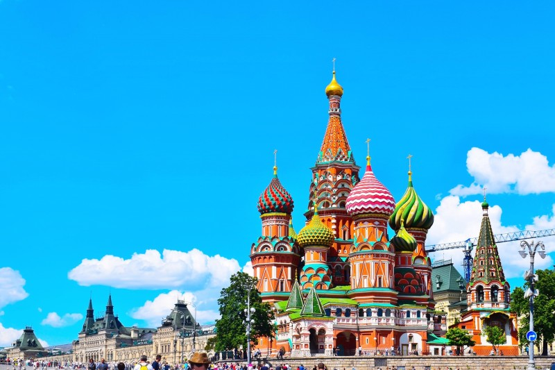

모스크바는 영어로 모스코(Moscow)라고 해요. 19세기 상트페테르부르크 수도가 옮겨졌다가 러시아 혁명 이후에
다시 수도가 된 러시아의 중심지예요. 하천수로망이 조밀하게 형성되어 있어서 교통이 편리한 덕분에 도시가
굉장히 크게 발전을 했는데요. 유럽의 도시 중에서도 굉장히 큰 도시에 속하는 곳이기도 해요.
테트리스 성으로도 유명한 성 바실리 대성당은 모스크바의 상징과 같은 곳이에요.
러시아의 황제였던 이반 4세가 전승을 기념하기 위해 봉헌한 성당으로 8각형의 첨탑을 중심으로 4개의 다각탑과 4개의 원탑,
총 9개의 탑이 숲처럼 서 있는 곳이에요.


말이 필요 없는 러시아 제일의 미술관 '에르미타주'. 에르미타주가 어느 정도냐 하면요. 대영박물관,
루브르 박물관, 바티칸 박물관하고 비슷한 수준이라고 생각하시면 됩니다!! 매년 무려 200만 명이
넘든 사람이 찾는 상트페테르부트크 최고의 명소에요!
고대 유물 같은 것, 다빈치, 렘브란트, 루벤스, 고흐, 루누아르, 고갱, 세잔, 피카소 등 유명화가의
작품들이 가득합니다! 에르미타주의 부속 건물 중 사진의 에메랄드, 금빛 벽으로 장식된 건물이 '겨울 궁전'이 유명합니다.
우리나라보다 약 2개월 느린 계절변화를 보이는 블라디보스톡의 날씨, 이렇다 보니 블라디보스톡을
여행하기 가장 좋은 시기는 우리나라의 여름인 6~8월이에요. 블라디보스톡의 여름은 한국보다 기온이
낮고 서늘해 한국의 더운 날씨를 피해 관광하기도 제격이죠. 비가 자주 내리기는 하지만 그만큼 화창한
날씨도 많아 유명 락페 등 페스티벌들이 많이 열리는 시즌이니, 여름의 블라디보스톡을 마음껏 즐겨보세요.
이르쿠츠크의 봄이 특별한 또 다른 이유는 바이칼 호수에 있다. 몹시 넓어 옛사람들은 바다인 줄 알았다는
이 호수는 ‘세계의 민물 창고’라 불릴 만큼 어마어마한 양의 담수를 담고 있다.
한 폭의 그림 같은 풍경을 즐기는 방법은 크게 두 가지다. 환바이칼 관광열차를 타는 것과 호숫가를 직접 걷는 것.
환바이칼 관광열차를 타면 하루 종일 바이칼 연안을 달리며 경치를 즐길 수 있다. 철길 따라 만발한 들꽃도 보고
정차 역에서는 현지인들의 공연과 음식 솜씨를 맛보기도 한다.
무르만스크는 오로라를 볼 수 있는 러시아의 멋진 도시입니다. 어떤 이들에게는 오색빛깔의
오로라 를 보는 것 자체가 여행의 이유가 될 수 있습니다. 추운 날씨가 오로라와 어울리는 도시이기도 합니다.
이색 체험을 하고 싶으시다면 무르만스크에 방문해서 ‘오로라 헌팅’을 경험해보세요